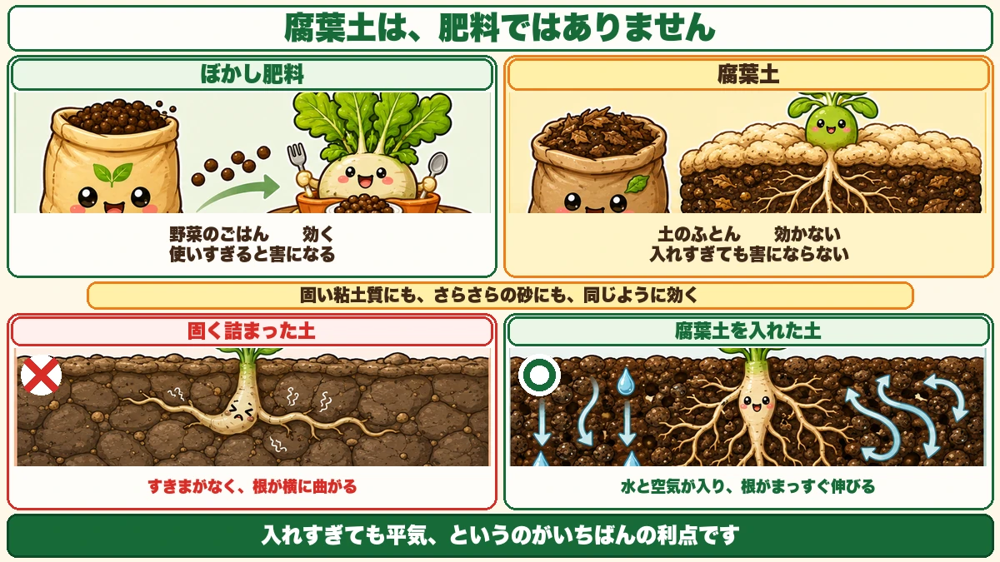
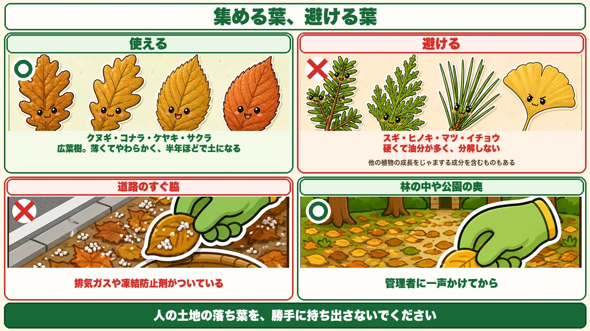
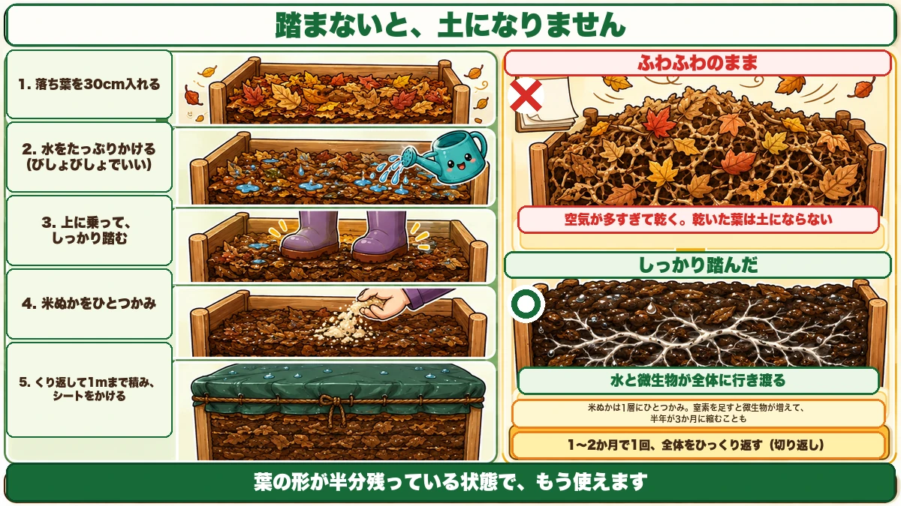

Leaves only rot if you tread on them 🍂 And the best leaves are the ones already half gone

🍂 "Bought leaf mould is surprisingly expensive."
🍂 "I piled leaves up and a year later they were still leaves."
🍂 "What's the difference between leaf mould and compost, anyway?"
Hello, I'm Eiko. Eight years of growing vegetables organically and without pesticides, and a teaching licence in science.
The most important line first:
Leaf mould is leaves, water and time.
And the material is lying on the ground, free, for a few weeks each autumn.
Leaf mould is not a fertiliser

What this diagram says （図解の文字）
- Bokashi fertiliser — "the vegetable's dinner. It acts. Too much does harm"
- Leaf mould — "the soil's duvet. It doesn't act. Too much does no harm"
- "Works the same on hard clay and on loose sand"
- ✗ Compacted soil — "no gaps; roots can't get through"
Different jobs
A fertiliser delivers nitrogen and phosphorus to the plant. Leaf mould does not. It changes the soil itself.
The numbers make it plain: nitrogen, phosphorus and potassium in leaf mould are each under 0.5 %. "I added leaf mould so I don't need to feed" doesn't hold.
- Fertiliser — the vegetable's dinner. It acts. Too much does harm
- Leaf mould — the soil's duvet. It doesn't act. Too much does no harm
That last point is its great advantage. Fertiliser needs judgement; leaf mould you can be generous with.
But don't add it and plant the same week
One condition. Leave a gap after adding it.
The reason is nitrogen drawdown. Put part-rotted organic matter into soil and the microbes breaking it down use nitrogen to do it. They get there first, so for a while there isn't enough left for the vegetables — you're feeding and nothing grows.
This is widely misunderstood: leaf mould is not fully finished compost, so it causes drawdown too.
The fix is simple: add it at least a month before planting, ideally two.
"Too much does no harm" is true. "You can plant straight away" is not. Keep those separate.
What actually changes
Leaf mould puts gaps into soil. Gaps let water in, let air in, let roots through — and give microbes somewhere to live.
It works the same on heavy clay and on soil that's too sandy, because both problems are really about how the gaps are arranged.
Which leaves to collect

What this diagram says （図解の文字）
- ○ Use: sawtooth oak, konara oak, zelkova, cherry — "broadleaf. Thin and soft, soil in about six months"
- ✗ Avoid: cedar, cypress, pine, ginkgo — "hard and resinous, they don't break down" ／ "contain compounds that inhibit other plants"
Thin broadleaf leaves
Best are oak, zelkova, cherry and similar broadleaf trees — thin and soft, so they break down fast. About six months to soil.
Leaves not to use
Avoid conifers — cedar, cypress, pine. Two reasons: the leaves are tough and resinous and barely rot, and they contain compounds that suppress other plants.
And the one to avoid most: ginkgo. Not "best avoided" — plainly: ginkgo leaves do not rot. They're said to survive even submerged in a pond. They're fibrous and keep their shape for years. One or two mixed in is nothing, but don't collect under a ginkgo avenue.
The best of all is maple — thin-skinned, quick to break down, and usually plentiful. If you know somewhere maple leaves collect, that's a find.
Small leaves beat large ones — faster, and you get a finer product.
Where not to collect
Don't take leaves from beside a busy road. They carry exhaust residues, and in winter whatever was spread for ice. Go for the back of a park, or inside woodland.
And don't take leaves off someone else's land. With parks, a word with whoever manages it usually gets a cheerful yes.
Where collecting is easy
The site changes how long this takes by a factor of three.
Leaves lying on tarmac are easiest, for the simple reason that there's no grass, so you collect leaves and nothing else. Gather from grass and you get soil and roots that you'll be picking out later. A woodland track does double duty — you're sweeping the path as you go.
Parks are the same, and you leave them tidier. If you're nowhere near woodland, a park is the realistic option.
Look for leaves that have already started
Here's the part worth the whole article. What you want is not fresh leaves.
- Roadside ditches on woodland tracks. Lift the top layer and the bottom is already leaf mould
- Under crash barriers — years of accumulation nobody has touched
- The corners of parks — around the base of shrubs, where the leaf-sweeping never reaches
- Slack water in streams and ditches. The silt on them is the value — it carries minerals washed off the land upstream
- Under stones — damp, with visible mats of fungus
Dark leaves that are half soil already are the treasure, because the fungi that do the work already live in them.
Start with fresh leaves alone and you're waiting for the fungi to arrive. Mix in soil-covered leaves as a starter and even in winter you can get to a finished product in about two and a half months.
So while you're collecting the fresh leaves on top, dig down to the black layer underneath. That alone turns six months into ten weeks.
Making it: you tread on it

What this diagram says （図解の文字）
- 1. Put in about 12 in (30 cm) of leaves ／ 2. Water well ／ 3. "Get on top and tread it down firmly" ／ 4. A handful of rice bran ／ 5. "Repeat up to about 3 ft (1 m) and cover"
- ✗ Left fluffy — "too much air, and it dries out"
The steps
- Make an enclosure — a timber frame, a tarp, or a big bag
- Add about 12 in (30 cm) of leaves
- Water — not soaking; damp enough to just hold together when squeezed
- Stand on it and tread it down firmly
- Scatter a handful of rice bran
- Scatter a little soil
- Repeat up to about 3 ft (1 m), then cover with soil or a sheet
Moisture: aim for about 50 %
I used to say "water it well". Overdoing it is worse than underdoing it. You want roughly 50 % moisture; too wet and you get putrefaction instead of decomposition — you'll know by the smell. Add more leaves or more soil to correct it.
Too dry is worse still: a dry heap doesn't decompose at all, it just sits there.
If you're using a bag, there's a neat test: cut small drainage slits in the bottom corners. When a little water seeps out, you're at about 50 %.
Without soil you get rotted leaves, not leaf mould
The step people skip. Don't build a heap of leaves alone.
Without soil, the fungi that break leaves down never arrive. The leaves simply decay slowly and you never get leaf mould.
A scatter of soil on every layer is all it takes — and if you use those half-rotted leaves from earlier, the soil and the fungi arrive together.
The best enclosure is a cardboard box
Having tried several over the years:
- Cardboard box — free from a supermarket. Weigh the bottom flaps down with soil and it won't blow away. Fine for a one-year batch
- Timber frame — awkward to build, and rotten within two or three years
- Bin bag — works on a balcony with no garden at all, but you can't compress it, so it takes space
- A hole in the ground — in my experience the easiest of the lot
If you dig a hole, pick somewhere with sun, air movement and drainage — not a low spot where water collects. 8 in (20 cm) deep is enough.
With a small quantity, don't spread it thin. Depth decomposes faster than area. Two feet square is plenty.
On a balcony: a 30 litre black bag
- A 30 L black bin bag
- Double it up if it's thin — they tear
- Cut drainage slits in the bottom corners
- Leaves → a small handful of rice bran → water → soil, three times over
- Press the air out, tie it, and stand it somewhere sunny
Black works faster than clear, and sun faster than shade.
Turning it just means flipping the bag over. Flip fortnightly and it's ready in about three months; monthly, six; ignore it and about a year.
Why treading matters
This is what separates a heap that works from one that doesn't. Treading closes the gaps between the leaves so water and microbes reach all of it.
Left fluffy, there's too much air and it dries out. And dry leaves stay leaves for years.
"A year later it was still leaves" is nearly always dryness. Not enough treading.
What the rice bran is for
Leaves alone will become soil, but slowly. Leaves are high in carbon and low in nitrogen, and the microbes doing the work can't multiply without nitrogen.
A handful of rice bran per layer and the population takes off — six months can become three.
(No rice bran where you are? Any nitrogen-rich material does the same job — fresh grass clippings are the easiest substitute.)
Don't overdo it. One handful per layer. Too much and you get insects, and the wrong microbes take over. Rushing it doesn't produce good leaf mould. "A light dusting" is the way to remember it.
Turn it once, partway through
After a month or two, turn the whole heap over. The outside is dry and the middle is damp; mixing evens it out. You can skip it, but the result is more consistent if you don't.
Knowing when it's ready
It depends what you're using it for
This is the distinction that prevents failures.
Spread on paths, or put in the base of a bed → half-formed leaves are fine. In fact leaf shapes still showing do more to open the soil up, and it isn't touching the rooting layer, so immaturity causes no problem.
Mixed into the growing layer → wait until it's fully mature.
Put immature material into the rooting layer and two things happen. One is the nitrogen drawdown from earlier. The other is that it attracts pests — part-rotted organic matter is where chafers and cutworms lay, and their larvae then eat your roots.
To sum up
- ✅ Leaf mould is a soil conditioner, not a fertiliser (N, P and K all under 0.5 %)
- ✅ Too much does no harm — but add it a month or two before planting (nitrogen drawdown)
- ✅ Thin broadleaf leaves. Avoid conifers, and above all ginkgo — it doesn't rot
- ✅ Not from busy roadsides, not off other people's land
- ✅ ★Collect the dark, half-rotted leaves underneath — the fungi are already in them
- ✅ Tread every layer. Fluffy means dry, and dry means still leaves next year
- ✅ About 50 % moisture. Too wet smells; too dry does nothing
- ✅ Scatter soil on each layer, or the fungi never arrive
- ✅ A handful of rice bran per layer — more brings insects and the wrong microbes
- ✅ Paths and bed bases can take it half-made. The growing layer needs it finished
You don't have to do all of it. Next time you pass a pile of leaves, kick the top layer aside and look at what's underneath. If it's dark and crumbling, take that 🌱
Thank you for reading!